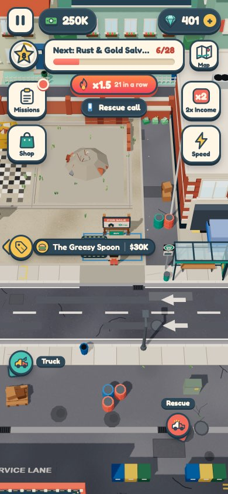
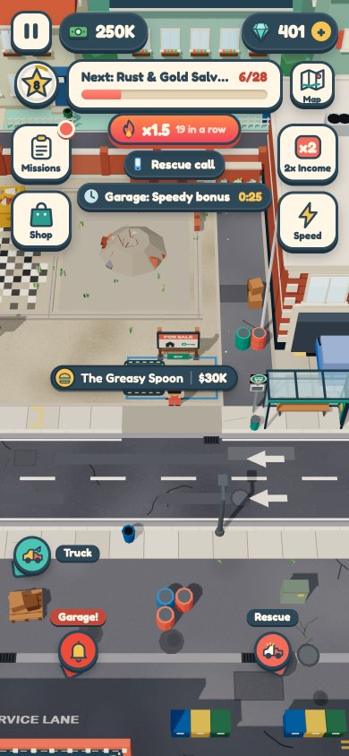
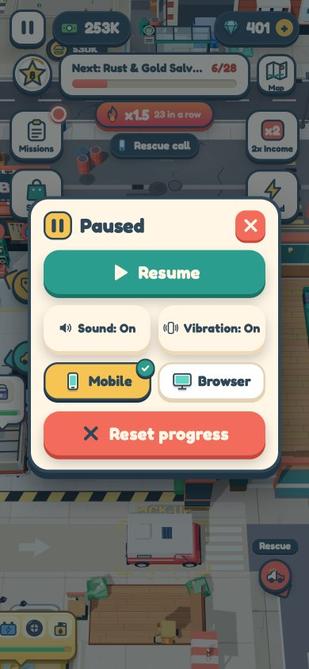
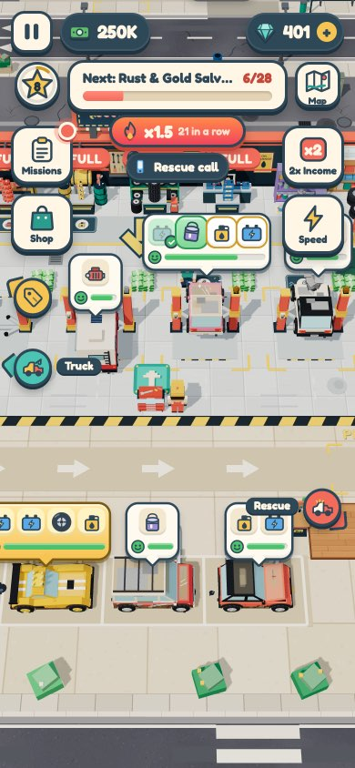

Away from the garage, it only speaks up when it needs you.
Step 1: sounds belong to a place and fade as you walk away, and the phone only vibrates for what you do. Step 2: once you can't hear a place, it stays quiet until it needs you; then it calls (a bell and one vibration). Coming home, the first pile you collect gets a coin cascade. As you decided, nothing shows what a place earned while you were away. Every screenshot is the real game.
1What step 1 already changed
The same 60 seconds, measured twice: standing at the diner (one screen north of the garage) on a late town save with three mechanics and a valet, doing nothing. Each mark is one vibration of the phone.
- Vibration = your handsYour pickups, deliveries, repairs, parking, pads, collecting cash and menus. Mechanics, the valet, painters, traffic and cash landing on a pile: never.
- Sound = a placeFull volume on screen. Past the edge it fades over half a screen width, gets duller and comes from its side. From the diner you still hear the garage's coins, faintly (8%).
- One tap at a timeTaps closer than 80 ms blur into one buzz, so inside that gap only a stronger one gets through (the "done" right after your last "fix").
- Your own taps got clearerOn a bay's mat for 6 s: your fix and the car's "done" vibrated; at the same time the mechanics' 2 fixes and 5 part drops didn't.
Hear it: walk away from the garage
Plays a garage loop (a part, the lift, the wrench, a fix, the cash) through the game's own sound code, at the volume, muffle and side step 1 gives it. Drag the garage away from your screen. Headphones show the left / right best.
2Step 2: when a place needs you
Phone view, in town at the diner, the garage one screen south. Late save: 3 mechanics and a valet.




3Hear the two new sounds
Vibrations can't play in a browser; the dots show how many taps each one is on the phone.
The call: "the garage needs you"
A shop-door bell, two notes down. It has to sound unlike anything else in town, the rescue radio most of all, because it is the one sound that reaches you from anywhere.
The first pile after a trip
Before, every pile played the same short "cash" and a light tap, whether you were gone 5 minutes or 5 seconds.
4When the call comes, and when it stays quiet
The call is the only thing that reaches you across the map, so it has to be rare and always worth it. Each place you own (the garage, the Spray Bay, later the VIP club) has its own chip and its own call.
It calls when both are true
- A customer there drops under 25% patience. The same condition as today's "Garage!" pointer. This one signal covers every kind of stall: no free lift, nobody on the car, a missing part. At stake: the +50% Speedy bonus and your streak.
- You can't hear that place. Its own sounds are silent where you stand.
It stays quiet when
- You can hear the place. The honk and the angry customer already tell you.
- You left it less than 10 s ago. You just saw the line.
- The same place called less than 45 s ago.
- It called twice and you didn't come. From then on only the chip and the pointer, until you visit it. The shop doesn't nag.
- The game is paused or a panel is open. It calls when you close it, if it still applies.
- You are towing a rescue (hook-up, tow, drop). It calls once the car is dropped, if it still applies.
- It already called about that customer. One call per customer.
5What was built, and your decisions
Files
src/game/away.js(new): per place, "can you hear it", the chip, the bell pointer, the call and its limits, the homecoming pile.src/game/world.js:ctx.hearing(pos), the volumectx.sfxAtplays at (0 = out of earshot).src/ui/audio.js: thecallbell and thehomecomingcascade.src/core/platform.js: thewarningvibration; the Vibration switch (saved, kept in the app's own storage like Sound).src/ui/panels.js,ui.css,icons.js: the Sound | Vibration row in the pause menu.src/game/pointers.js:setPriority(), so a call puts its pointer first in line.src/game/town.js: its old garage-only "Garage!" pointer is gone (away.js has one per place).src/game/cash.js: collecting a pile asks away.js whether it is the homecoming one.
Decided
- No earnings UI. Nothing shows what a place made while you were away: no chip, no summary.
- One chip and one pointer per place (Garage, Spray Bay), only while that place needs you.
- Call limits: 45 s per place, one call per customer, quiet after two calls you didn't come back for.
- Rescues come first: a call waits while you tow a car.